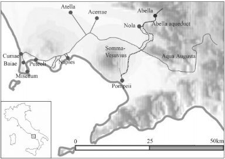
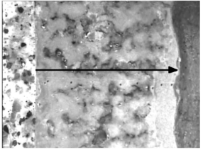
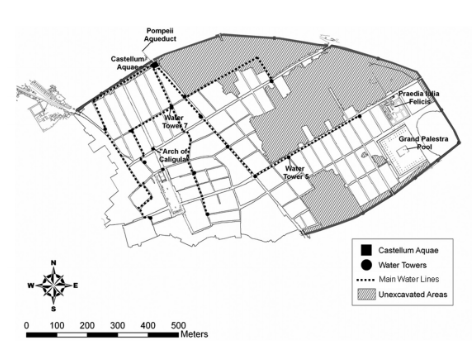
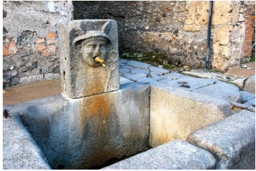
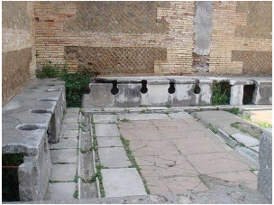

Like our modern cities of today, Pompeii featured a complex water supply and sanitation network, transporting water within and to the city.
Source 1: Augustan Aqueduct connecting Pompeii, dotted line is a hypothetical route.
The Augustan Aqueduct or Aqua Augusta was built, as the name suggests, during the late first century B.C. or early first century A.D. under the reign of Augustus. Archaeologists speculate that the aqueduct may have been, at least at one point, Pompeii's source of water. This is confirmed by Pietrantonio Lettieri’s 1560 description of a branch of the aqueduct leading towards ‘the location of the city of Pompeii in ancient times, which was on the heights in front of Torre Annunziata’. Source 1 shows a hypothetical route for a branch leading to Pompeii, however archeologists are yet to discover any parts of the aqueduct to support this. Still, the presents of desposted sinter within Pompeii water system, shown in source 2, suggests that there was at one point a branch serving Pompeii.
Source 2: Sinter deposit in Pompeii, arrow indicates growth length (deposit is 4.9mm thick).
The Aqua Augusta sourced water from the Acquaro and Pelosi springs in the Apennine Mountains, fed through the Terminio-Tuoro aquifer. Both Fiorillo and Esposito refer to the aquifer as comprised of calcium carbonate-rich and calcium magnesium carbonate-rich rock layers. These layers would produce sinter deposits within the pipes of Pompeii, as sources 2 shows. Although there are still probably locations of Pompeii’s water source. Duncan Keenan-Jones, John Hellstrom and Russell Drysdale refer to a aqueduct mentioned in Paulinus of Nola’s work as a possible source. They state that ‘the poem mentions the repair of an old aqueduct that carried water from the calcareous mountains near the town of Abella.’ This falls in line with Murano’s theory that, as they describe, ‘that this aqueduct continued south and supplied Pompeii’. Although this aqueduct was later connected to the Aqua Augusta as it is presumed Pompeii was as well, as is seen in source 1. Instead another possible water source are the springs found on Somma-Vesuvius today. Pagano mentions ‘a smaller aqueduct in the vicinity of Herculaneum that presumably served a nearby villa’, so it is not impossible that an aqueduct within the region also supplied Pompeii.
Source 3 shows how water was transported throughout the city.
Source 3: Pompeii water network
Within Pompeii water entered the city from the castellum aquae. The castellum aquae was positioned at one of the higher points within the city (near Porta del Vesuvio), utilising gravity to influence water movement through the cities underground pipe network. Water towers were placed periodically throughout the network, as shown in source 3, functioning to provide junction points and, as Bradley states, ‘control water pressure’. Fistulae/pipes branched off the the main water lines within the city, providing bathhouses, fountains, latiens, houses and private establishments with water.
Fountains like the one shown in source 4 were scattered across the city, described by Bradley as ‘usually no more than 70 to 80 meters apart’. These fountains were not just for looks however, they had an important function within Pompeii, providing water to those who were unable to afford connection at their homes.
Source 4: Fountain in Pompeii
Pompeii's water supply also supplied water to the foricae or public latrines found within the city. Foricae were built in high traffic areas such as within the Forum or surinding the Amphitheatre. Despite the appearance of the foricae in source 5, however, Bradley describes them as ‘[posing] serious health risks to users’, thankfully he does not elaborate. Interestingly the foricae was used not only as a toilet but as a rubbish dump. Surveys of the sewage systems with Pomepeii and Herculaneum have revealed rubbish present, categorized by Andrew Fairbairn as ‘derived from food preparation so you get things like, bits of fish heads and you get small bits of bone vertebra that have been chopped up’.
Source 5: Foricae (public latrine)
